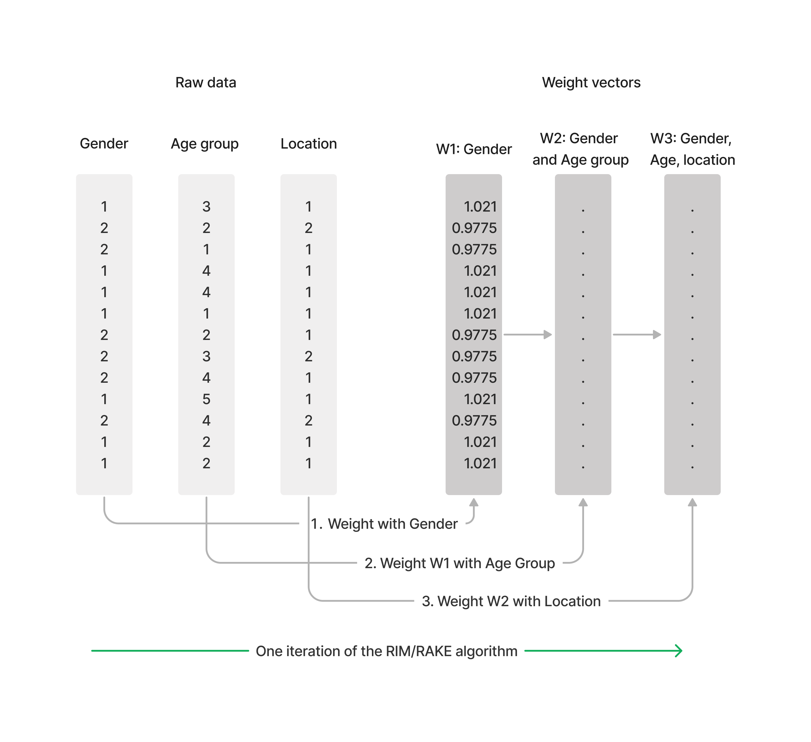

Weight data
Contents
Weight data#
Introduction to RIM weighting (AKA Rake)#
Survey data is weighted to adjust for any biases introduced during the sampling process, such as non-response, oversampling certain groups, and demographic imbalances. Weighting increases the accuracy and reliability of the survey results.
Tally implements the RIM algorithm (random iterative weighting), also known as RAKE. RIM is an iterative algorithm that involves generating a set of random weights for the survey data, and then using these weights to estimate population values. The estimated values are then compared to known population values, konwn as targets, and the weights are adjusted accordingly. This process is repeated until the estimated values converge with the known population values.

Create weight scheme with targets#
If census data shows us that in the wider population we are surveying, the distribution between gender, age groups and where people live is
Gender: 51% women, 49% men.
Age groups: 21% under 18 years, 29% 18 to 39 years, 27% aged 40 to 59 years, and 23% were aged 60 years and over
Location: 17.1% in rural areas, 82.9% in densely populated areas.
We create a weighting schema with these targets.
>>> target_scheme = {
'gender':{1:49, 2:51},
'age_cat':{1:21, 2:29, 3:27, 4:23},
'urban_rural':{1:82.9 , 2:17.1}
}
Running the algorithm#
We run the algorithm with Tally’s weight method
>>> weight = dataset.weight(
name='Gender, urban, location',
variable='weight_c',
unique_key='unique_id',
scheme=target_scheme
)
The algorithm runs the RIM weighting algorithm and creates a new variable, weight_c. We can run a crosstab to check whether it has worked.
>>> weighted = dataset.crosstab(x=['gender', 'urban_rural'], ci=['c%'], w='weight_d').rename(columns={"Total":"Weighted"})
>>> unweighted = dataset.crosstab(x=['gender', 'urban_rural'], ci=['c%']).rename(columns={"Total":"Unweighted"})
>>> pd.concat([unweighted, weighted], axis=1)
| Unweighted | Weighted | ||
|---|---|---|---|
| Question | Values | ||
| What is your gender? | Base | 8255.0 | 8255.0 |
| Male | 47.9 | 48.9 | |
| Female | 52.1 | 51.1 | |
| Urban or rural? | Base | 8078.0 | 8078.0 |
| Urban | 80.8 | 82.9 | |
| Rural | 19.2 | 17.1 |
In the above table, we have used pandas to concat two dataframes, one with the w parameter set to weight_c and the other with no w parameter. The results show the unweighted results vs the weighted results and we can see our targets have been met.
The weight report - estimating weighting quality#
The weight method also returns a weight report, with important information.
>>> weight['weight_report']
{'weights_scheme:_default_name_:None': {'Total: unweighted': 8255.0,
'Total: weighted': 8254.999999999849,
'Weighting efficiency': 89.16311809302186,
'Iterations required': 12.0,
'Mean weight factor': 0.9999999999999817,
'Minimum weight factor': 0.6748876536922374,
'Maximum weight factor': 1.5680001652614515,
'Weight factor ratio': 2.3233499037700454}}
The above report shows
Total: Weighted - the total base after weighting
Weighting efficiency - If the data needs to be weighted heavily up or down, the efficiency percentage will be low. The greater the percentage the more well balanced the sample.
Iterations required: How often was the algorithm run (as per the diagram above)
Mean weight factor: The mean value of the new weight column
Minimum weight factor: The respondent with the lowest weight (most over-represented)
Maximum weight factor: The respondent with the highest weight (most under-represented)
Weight factor ratio: Maximum factor/minimum factor